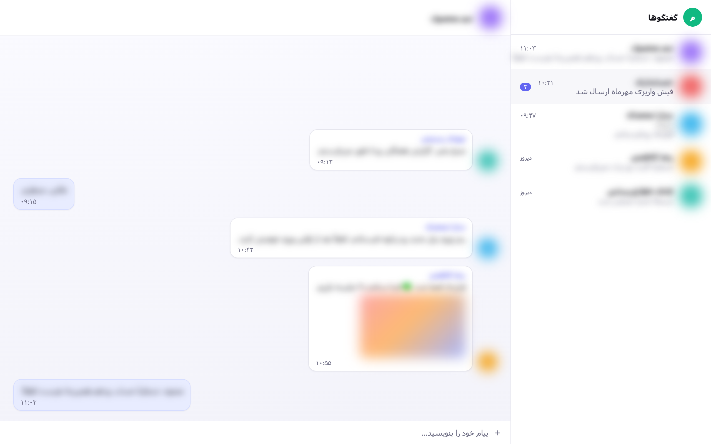
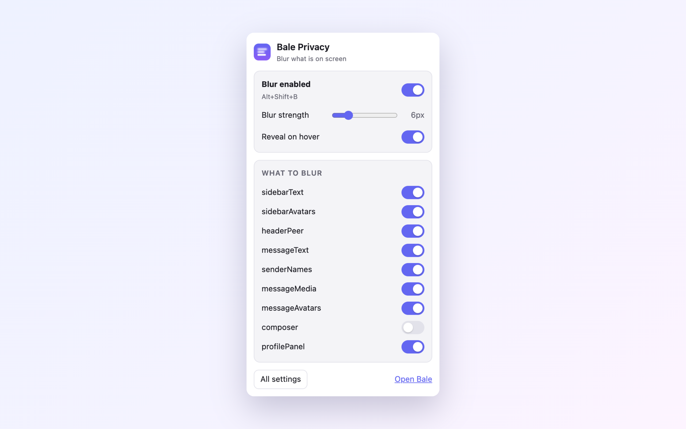

Your messages stay yours,
even on a shared screen.
A browser extension that blurs chat names, message previews, photos and profile pictures on web.bale.ai. Hover anything to read it. Nothing leaves your browser.

Hovering one row reveals just that row. Everything in this screenshot is fabricated demo data.
What it hides
Each category has its own switch, so you decide how much to give up.
Chat list
Conversation names, message previews and the sender prefix in group previews.
Messages
Bubble text, quoted replies, link and document cards.
Sender names
Who wrote what in a group, without hiding the conversation itself.
Photos and stickers
Images, video thumbnails, stickers and big emoji.
Profile pictures
Avatars in the list, in messages, in the header and in the profile panel.
What you are typing
Optional: blur the composer while you write.
How you get it back
Hover
Move the pointer over one element to read it. Everything else stays blurred.
Hold a key
Hold Alt (or Ctrl / Shift) to reveal the whole screen while the key is down.
One keystroke
Alt+Shift+B toggles blurring in every open
tab.
Look away, it hides itself
Optionally re-blur the moment the window loses focus, or after a period of inactivity — both override the master switch.

Install
On Firefox, install it from addons.mozilla.org — it is reviewed, stays installed and updates itself. Everywhere else, the releases page carries ready-made packages, the same artefacts that go to the stores, built from the tagged source by CI.
Chrome, Edge, Brave, Opera
-
Download
bale-privacy-<version>-chrome.zipfrom the latest release. - Unzip it, and move the resulting folder somewhere permanent — your Documents folder, for example. Chrome loads the extension from that path every time it starts, so deleting the folder uninstalls the extension.
- Open
chrome://extensions(Edge:edge://extensions). - Turn on Developer mode, top right.
-
Click Load unpacked and select the unzipped folder — the one containing
manifest.json. - Optional: click the puzzle-piece icon in the toolbar and pin the extension.
- Open web.bale.ai/chat. Blurring is on by default.
Firefox
- Open the listing on addons.mozilla.org.
- Click Add to Firefox, then Add to confirm.
- Open web.bale.ai/chat. Blurring is on by default.
To try a specific version or a build of your own instead: download
bale-privacy-<version>-firefox.zip from the
latest release, open about:debugging#/runtime/this-firefox and use
Load Temporary Add-on…. Firefox drops temporary add-ons when it closes,
so that has to be repeated every session.
Build it yourself
git clone https://github.com/amiranmanesh/bale-privacy-extension.git
cd bale-privacy-extension
npm install
npm run build
Then load dist/chrome or dist/firefox with the steps above.
Permissions, in full
The whole list. There is no second page.
storage
Saves your switches, and lets every open tab react when you change one.
A content script on web.bale.ai
The only site the extension touches. It adds one stylesheet and nothing else.
No host permissions, no access to your tabs or browsing history, no network requests, no analytics, no remote code. Read the privacy policy or the source.
فارسی
نسخهٔ کامل فارسی این صفحه، شامل راهنمای گامبهگام نصب، در صفحهٔ فارسی در دسترس است.